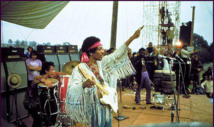

- 
Das Jahr 1969 begann mit Problemen mit der kanadischen Justiz. Im Mai wurden bei einer Kontrolle am Flughafen von Toronto in Hendrix' Gepäck Heroin und Haschisch gefunden. Hendrix behauptete, es sei ohne sein Wissen hineingelangt.Im Sommer 1969 stellte er für das Woodstock-Festival eine neue Band zusammen. Diese nannte sich Gypsy Sun & Rainbows – zugehörig waren Mitch Mitchell am Schlagzeug, sein alter Armee-Freund Billy Cox am Bass, Larry Lee an der Rhythmusgitarre und zwei Perkussionisten. Witterungsbedingt verzögerte sich der Auftritt der Band, und so traten die Musiker erst am frühen Montagmorgen des 18. August 1969 auf, als das Festival eigentlich schon vorbei sein sollte. Von den 500.000 Besuchern waren zu diesem Zeitpunkt gerade noch rund 25.000 anwesend.Bei diesem Auftritt präsentierte Hendrix zum ersten Mal seine in konservativen Kreisen umstrittene und nachfolgend weltbekannte Interpretation der US-amerikanischen Nationalhymne The Star-Spangled Banner. Durch seine Spieltechnik und den Einsatz von Effekten (vor allem Wah-Wah und Fuzz-Face) verfremdete er die Hymne und nahm somit auf akustische Weise Stellung zum Kriegsgeschehen in Vietnam. „Durch Spieltechnik und den Einsatz von Effekten ließ er zwischen den bekannten Motiven der Hymne auch Kriegsszenen hörbar werden, darunter verblüffend deutlich Maschinengewehrsalven, Fliegerangriffe und Geschosseinschläge.“[11]